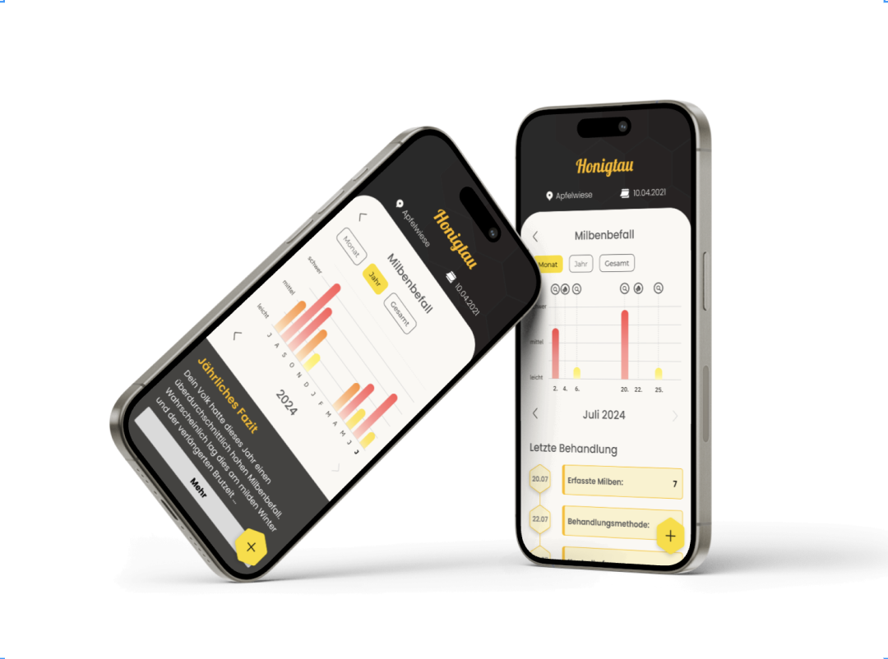
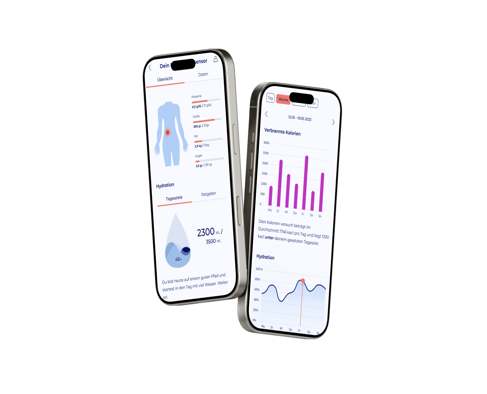
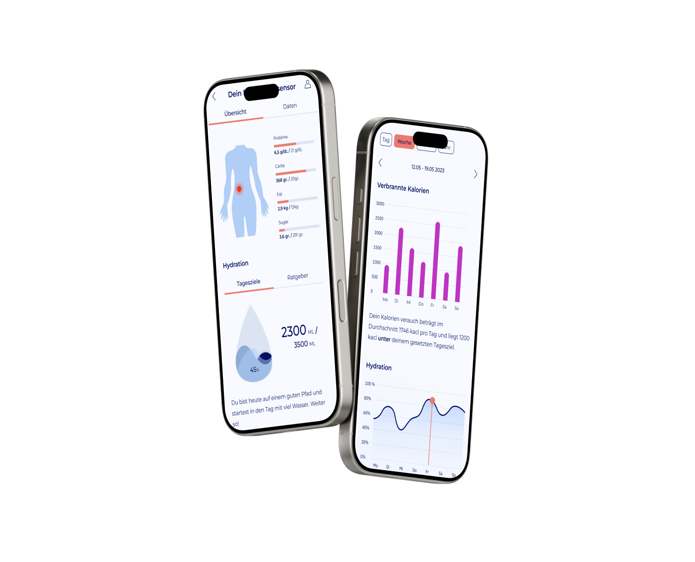

I am studying
Digital Product Design and Development at
HfG Schwäbisch Gmünd (6th semester) and currently
spending my exchange semester at
San José State University in California. My focus is
on user-centered, technology-driven product concepts and clear,
functional interfaces.
About
I enjoy working at the intersection of design and technology: from
research and flow definition to wireframes and interactive
prototypes. Most recently, I completed an internship at
Capgemini in Stuttgart as a UX Designer &
Developer.
AI-powered health app concept: from ideation, wireframes and user
flows to a consistent UI system. The goal is to make personal
health data (via sensors) understandable and deliver motivating,
easy-to-access insights.
BeeSmart

Digital co-pilot for beekeeping: documenting mite infestations,
treatment tracking and AI-based evaluation. A logbook allows
trend-based decisions for bee health – designed for beginners and
advanced users alike.
Resume
Education
Hochschule für Gestaltung (HfG): since March 2023
– Digital Product Design and Development (B.A.), Schwäbisch Gmünd
Hochschule der Medien (HDM): Oct. 2021 – June
2022 – Packaging Technology (VT7), Stuttgart
ProGenius Berufskolleg: Sept. 2019 – June 2021 –
Assistant for Information & Communication, Fachhochschulreife,
Schwäbisch Gmünd
Internship
Capgemini: UX Design & Development – Stuttgart
(March 2025 – July 2025)
Exchange
San José State University (SJSU): California –
Exchange Semester

 
